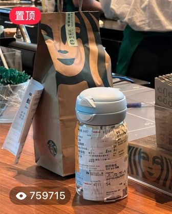
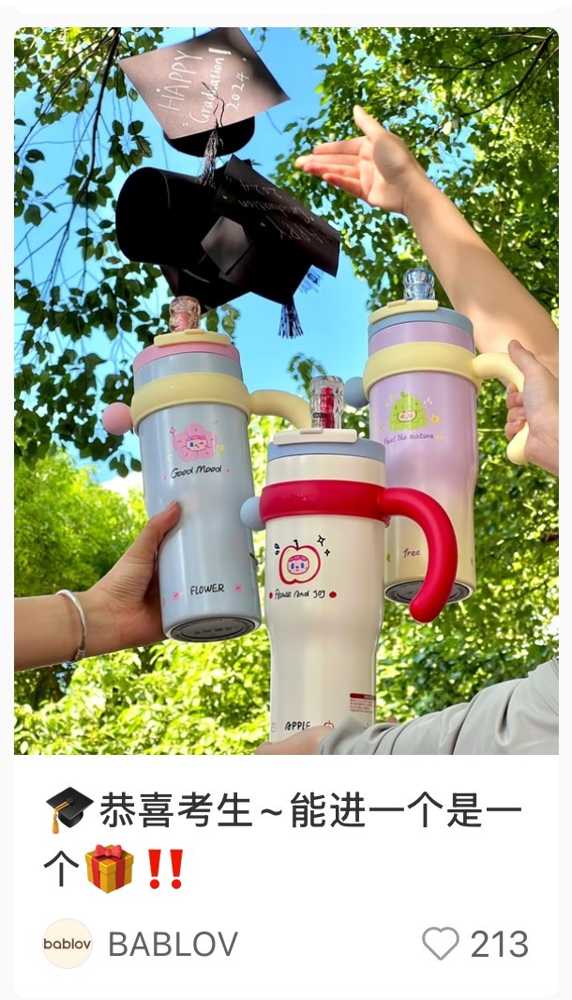

BRAND STORIES
品牌内容档案
从新品上架到热点选题，怎么让产品融入生活。
社群运营与活动策划

BABLOV / 社群运营
敲敲杯群内返场
我负责品牌粉丝群运营。敲敲杯返场时，我把活动时间、群友权益和客服咨询方式写在一张说明里。
- 社群
- 整理活动通知
- 客服
- 统一活动答复
BRAND STORIES
从新品上架到热点选题，怎么让产品融入生活。

BABLOV / 社群运营
我负责品牌粉丝群运营。敲敲杯返场时，我把活动时间、群友权益和客服咨询方式写在一张说明里。